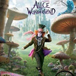

作者：马跃虎(唐山) 发表日期：2010-3-22 11:27:00
原著是一本漫画与涂鸦加上文字说明的另类日记。主人公格雷是一个念初中的半大小子。他善良、诚实、聪明、爱玩，满脑子的鬼点子。他的妈妈让他记日记，他除了松散地记述了有趣的或难忘的事情外，还画了许多漫画。在日记里，格雷记叙了他如何驾驭充满冒险的中学生活，如何巧妙逃脱学校歌唱比赛，最重要的是如何不让任何人发现他的秘密。他经常想捉弄人反被人捉弄；他常常想做好事却弄巧成拙；他屡屡身陷尴尬境遇竟逢“凶”化吉。他不是好孩子，也不是坏孩子，就只是普通的孩子；他有点自私，但重要关头也会挺身保护朋友……总之，那些十几岁孩子常遇到的麻烦事他都毫无例外地遇上了：他的父母不让他打电子游戏，他的哥哥罗德里克欺负他，他的弟弟曼尼总给他惹麻烦，而他学校的女生则认为他不过是浪费她们的时间；他和死党罗利分分合合……
《小屁孩日记》以图文并茂的形式给我们展现了美国乃至世界儿童的真实生活以及情感世界。幽默诙谐的漫画和妙趣横生的文字天然浑成，相映生辉。我们在富有喜剧性色彩的文字和图画中，真切地感受到了那种鲜活的现代气息以及蓬勃向上的热情。这是一套很有趣的、能让我们感觉到童年很美妙的书。
相关博文:
我们期待你也来添一笔。
作者：云翼风清 发表日期：2008-05-02 15:39
又是一部墨西哥的小成本影片，风格上和之前的《潘神的迷宫》比较相近，毕竟它的编剧和《潘》的导演是同一个人么，虽说是恐怖片，但却能让人感受它其中所带的文艺气息，整个叙述过程有点像《灵异拼图》，都是展示母性的伟大，但在悬疑和整部影片的设置方面都要超过了后者，导演胡安·安东尼奥·巴亚纳在这部恐怖处女作之中展现出了他骨子里别样的艺术风情。电影中另外一个惊喜就是喜剧大师卓别林的女儿：杰拉丁-卓别林的出演，虽然只是演一名通灵大师，其表演也就短短的十几分钟，但其表演却是很富有张力的，其绿叶地位不可动摇，是影片女主角最后解迷的关键人物。
先谈其悬念的设置，影片以“寻宝游戏”为基点，铺陈出整部影片的悬念，即紧张又显得紧凑，在一连串的“寻宝”过程中一气呵成，将整部影片中最重要的悬念隐射出来，老实说的确有些让人应接不暇，而到最后门把手这边，整个“寻宝”过程遇到了障碍，嘎然而止，也让观众有了一丝喘息的机会，整理思绪，等着揭示最后的真相。其悬念的设置虽谈不上讨巧，但在表现手法上导演还是挺照顾观众的。和其他同类型的影片一样，恰是这种悬念构建了整部影片的恐怖气氛。
再谈谈影片的主旨：母爱。整部影片以悬念来构建恐怖的氛围，而最终以“母爱”来消弭了所有的恐怖气息。这也是为什么说它带有文艺气息的一个原因。影片围绕母亲劳拉寻找自己的儿子这一个线索为叙述的主线，整个影片进程都是以展现这位母亲的寻子过程来展开的，很平实还算感动，但在最后影片来了个峰回路转，以劳拉最后的牺牲来结尾，虽说有些突然，但恰恰将“母爱”之情上升到了“母性”，最后劳拉的选择不仅仅是为了儿子，也是为了照顾整个孤儿院那些逝去孤儿（昔日的伙伴）而选择了“留下”，以抚慰这些受伤、孤寂的灵魂，让他们感受从未曾感受过的“母爱”。
最后略提一下影片另外一条直线：关于彼得-潘。彼得-潘永远不想长大，而最终回到了梦幻岛，而温迪选择了慢慢变老，可以说劳拉就是彼得-潘的写照，一开始她被领养而离开了孤儿院，而多年之后他又选择了回来，并选择这里作为照料儿子（是她领养的）的“梦幻岛”，她是怀念孤儿院的种种的，因为这里充满了她童年开心的回忆，有儿时的玩伴，还有孤儿院的摆设，在这里他们不是孤寂的，于是最后她选择了留下，或者说是回到过去的孤儿院，而把丈夫（温迪）留了下来。从这个角度来说《灵异孤儿院》恰是一部温馨的成人童话。它用“母性”化解了成人世界的恐怖，回归到各自的“梦幻岛”。
作者：墨 发表日期：2009-10-05 01:18
身为希腊神话的痴迷者，岂能放过这样的电影。1981年的同名原版早已票房不菲，而如今，这个3D、CG纷华乱坠的如今，新版自然要更美更动人。华纳兄弟们，用顶尖的特效成全奥林帕斯的神圣面容吧，但求撰写神迹者足够谦卑与虔诚——
·关于片名之关键词Titans ——
Titans泰坦 / 提坦，前奥林帕斯诸神，是大地之母盖娅（最古老的前奥林帕斯诸神，亦为世界的四大基原之一）与天神乌拉诺斯的后代，就是宙斯的父亲母亲那一代。共十二位，六男六女。他们的子孙也均属于Titan族。
说是翻拍，演员们却表示剧本已经完全变型，属于一种全新的创作了。而新片的主角是宙斯的儿子之一，所以这个片名“泰坦之争”未免太大。勉强之下与此名相称的剧情只有宙斯与冥王的冲突，那么珀尔修斯又被搁到哪儿了呢……混乱中……
·关于主角珀尔修斯——
珀耳修斯Perseus是宙斯和达那埃Danae（一个凡间女子）的儿子。
他的外祖父（某国国王）曾经得到一条神谕，预言自己会被某一个外孙害死，于是将达那埃囚禁于铜塔中，禁止她接触男人。可是宙斯看上了这个女人并与其私定终生，终得一子珀尔修斯。结果母子二人被那个外祖父装进了箱子里，沉入了大海。
在宙斯的庇护下，箱子飘到一座小岛上，母子便被一个渔夫所救。珀尔修斯就在渔夫的抚养下长大成人了。（达那埃与此渔夫有何故事就是题外话了……）。后来，渔夫的弟兄——该岛之王爱上了达那埃，欲娶其为妻，遭到珀尔修斯的强烈反对。于是，岛主为了撵走珀尔修斯就命令他去斩除美杜莎Medusa。
美杜莎Medusa
戈耳工Gorgon 三姐妹之一，金发而貌美，受到了海神波塞顿的爱慕，结果遭到雅典娜的嫉恨，并被其将头发变成了毒蛇。而其雅典娜下了诅咒，目睹美杜莎面貌的人将化作岩石。（这应该是另一种方式的毁容，看吧，雅典娜与波塞顿果然有什么什么……）
不仅如此，雅典娜的嫉恨从未消减过。她为了协助珀尔修斯斩杀美杜莎，赠给珀尔修斯一面反光铜盾，以及一些获取成功的方法。最终，宙斯之子经过几番波折之后完成了任务，斩下了美杜莎的头颅。
作者：管理员 发表日期：2010-04-10 01:18

最新票价信息
联合院线统一票价:
票价信息实时更新！